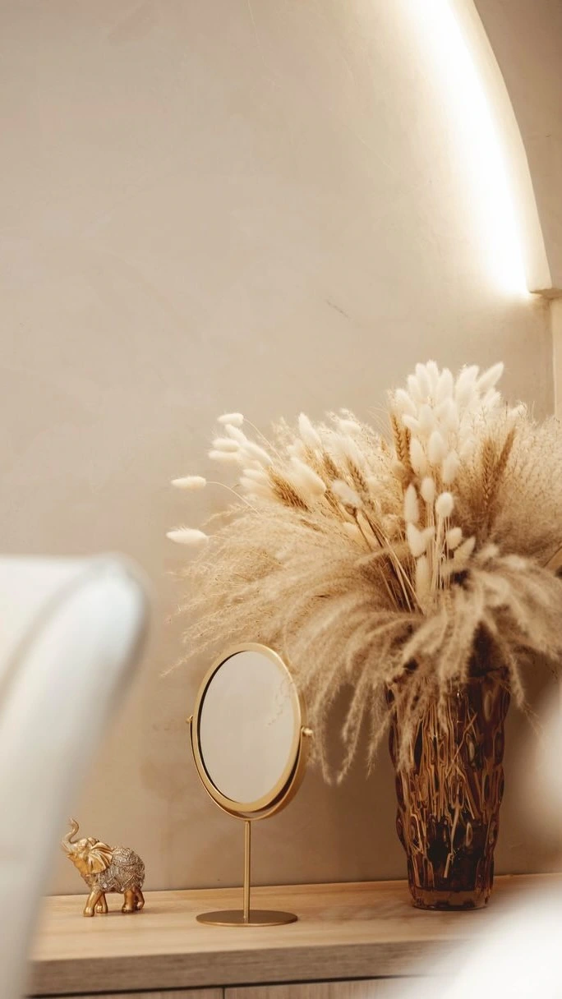
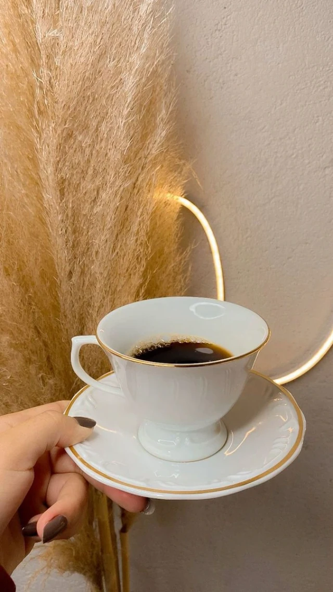
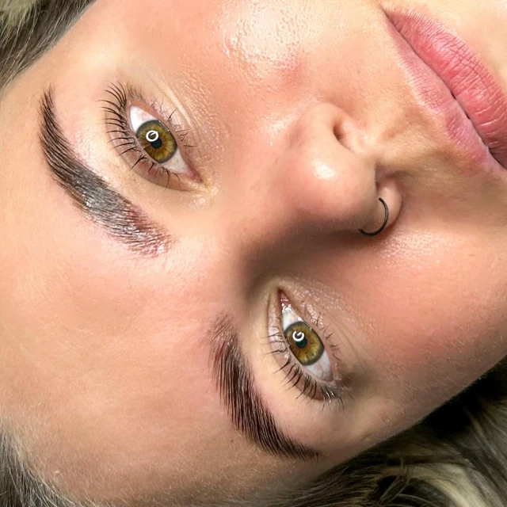
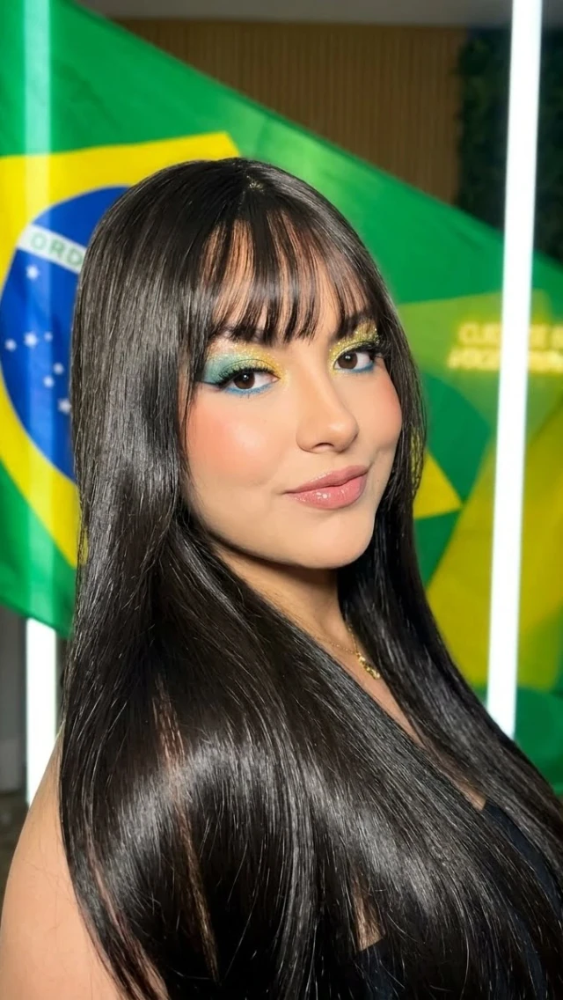
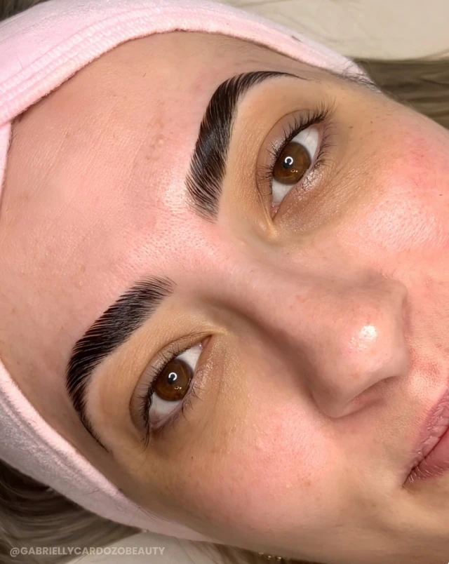
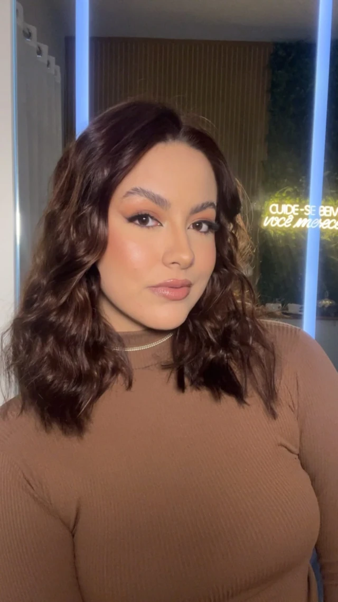
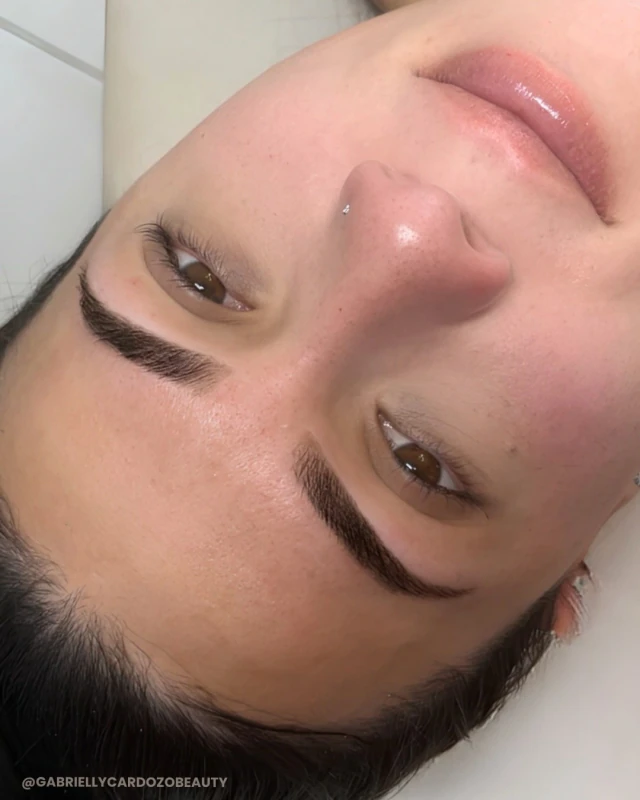
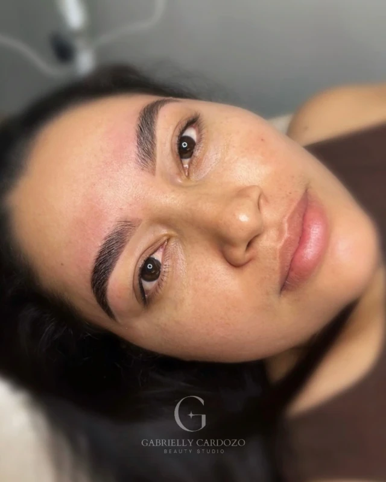
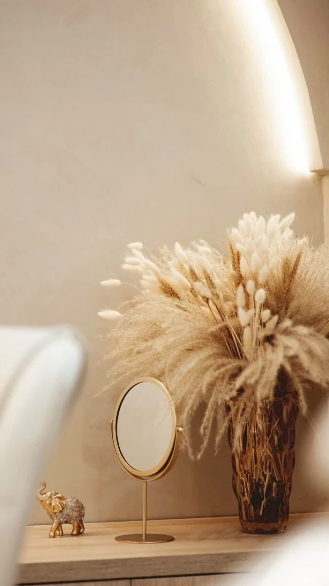
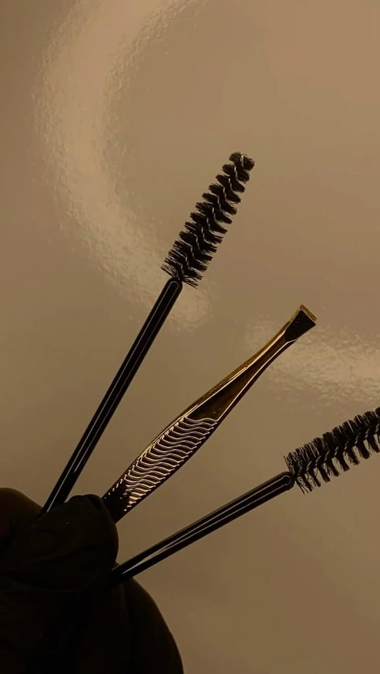

01 / 07
Capilar
Procedimentos capilares para cuidar dos fios do jeito que você gosta de usá-los. Conte pelo WhatsApp o que procura e agende o horário que cabe no seu dia.
Agendar procedimento capilarCentro de beleza e estética avançada · Tubarão – SC
Procedimentos capilares, faciais, corporais e muito mais, de segunda a sábado. Cedo, antes do trabalho, ou à noite, depois dele.
Seg a Sáb · 7h às 21h

Um dia no Gabrielly

Manhã
Às 7h as portas já estão abertas. Dá para chegar com calma e começar o dia cuidando de você antes de qualquer compromisso.

Durante o dia
Cuidado com sobrancelhas e olhar, com atenção ao desenho de cada rosto e ao seu jeito de se ver no espelho.

Tarde
Terapia capilar para couro cabeludo e fios, alisamentos e outros procedimentos capilares. Tudo começa por entender o seu cabelo.

Fim de tarde
Procedimentos faciais e corporais e Botox no mesmo endereço. Converse antes pelo WhatsApp e tire suas dúvidas sobre cada um.

Noite
O centro fica aberto até as 21h, de segunda a sábado. Dá para encaixar o cuidado depois do expediente, sem correr.
As horas do mostrador indicam o funcionamento do centro, não o horário de cada procedimento.
Cuidados
01 / 07
Procedimentos capilares para cuidar dos fios do jeito que você gosta de usá-los. Conte pelo WhatsApp o que procura e agende o horário que cabe no seu dia.
Agendar procedimento capilar02 / 07
Um cuidado voltado ao couro cabeludo e à saúde dos fios. O primeiro passo é contar o que você tem notado no seu cabelo.
Agendar terapia capilar03 / 07
Alisamentos para quem busca fios lisos e mais simples de arrumar no dia a dia. Tire as dúvidas sobre o processo antes de marcar.
Agendar alisamento
04 / 07
Procedimentos faciais para o cuidado da pele do rosto. Conte o que você procura e converse sobre o que faz sentido para você.
Agendar estética facial
05 / 07
Um dos destaques do perfil do centro. Converse antes, tire suas dúvidas sobre o procedimento e agende com tranquilidade.
Conversar sobre Botox
06 / 07
Procedimentos corporais para incluir o cuidado com o corpo na sua rotina, inclusive à noite, com o centro aberto até as 21h.
Agendar estética corporal
07 / 07
Cuidado com sobrancelhas e olhar, feito com calma e atenção aos detalhes que emolduram o rosto.
Agendar sobrancelhas e olharO espaço
Luz quente, pampas, detalhes em dourado e um café na xícara de porcelana. O cuidado começa antes do procedimento, no momento em que você chega.
“Cuide-se bem, você merece.”
Agende
Agendamento pelo WhatsApp. Conte qual cuidado procura e o melhor horário para você.
Agendar horário no WhatsApp